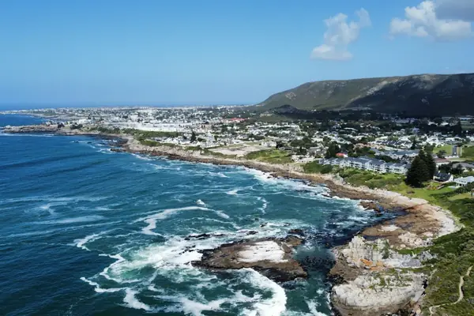

Home › Wine regions › Cape South Coast
Cape South Coast wine region

Photo: Spekboom on Unsplash
The Cape's cool southern and eastern seaboard, from Elgin's apple orchards to Africa's southernmost vineyards at Elim.
Cape vineyards between two oceans, prized for Chenin Blanc, Pinotage and Bordeaux-style blends.
Climate and soil
Cool maritime climate shaped by two oceans and steady afternoon sea breezes; rain falls mainly in winter. Elgin sits high in a mountain bowl around 300 m, Elim is flat, windy and exposed near Cape Agulhas. Soils range from Bokkeveld shale and clay to sandstone and weathered granite.
Key areas and appellations
Walker Bay, Elgin, Overberg, Cape Agulhas, Swellendam, Plettenberg Bay, Lower Duivenhoks, Elim, Bot River, Greyton, Hemel-en-Aarde Valley
Good to know
A Wine of Origin region that groups the coastal districts east of Cape Town. Elgin became a district in its own right in 2011 and is prized for Chardonnay, Pinot Noir and Riesling; Elim, in the Cape Agulhas district, makes pungent Sauvignon Blanc. Hemel-en-Aarde (Walker Bay) has its own page on this site. Cap Classique sparkling is a growing speciality.
The grapes of Cape South Coast
- Pinot Noir (red): red cherry, earth, mushroom. Best known in Burgundy, Oregon, New Zealand.
- Chardonnay (white): apple, lemon, butter, oak. Best known in Burgundy, California, Australia.
- Sauvignon Blanc (white): grapefruit, lime, fresh herbs. Best known in Loire, Marlborough, Bordeaux.
- Syrah / Shiraz (red): blackberry, pepper, smoke. Best known in Rhône, Barossa, Washington.
- Chenin Blanc (white): apple, quince, honey. Best known in Loire, South Africa.
Notable producers in Cape South Coast
- Lismore Estate Vineyards
- Paul Cluver
- Iona
- Oak Valley
- Richard Kershaw
- Strandveld
- Black Oystercatcher
- Beaumont
- Newton Johnson
Cape South Coast wines to try
Lismore Estate Vineyards The Age of Grace Viognier
Fresh, elegant Viognier: apricot and blossom with restraint.
Food: Curry, pork
Paul Cluver Estate Chardonnay
Cape South Coast · WO Elgin · Chardonnay
Cool Elgin Chardonnay with lemon curd, white peach and a fine thread of hazelnut oak held tight by bright acidity.
Food: Roast chicken with lemon and thyme
Food to try with Cape South Coast wines
- Steak: Firm tannins in Cabernet and Tempranillo cut through the fat and char of a seared steak, while peppery Shiraz echoes the sauce.
- Salmon: Salmon is rich enough for a light red: low-tannin Pinot Noir won't clash with the oily fish, and creamy Chardonnay matches its texture.
- Oysters: Briny oysters love crisp, mineral whites: Champagne's bubbles, Muscadet's saline edge and Sancerre's citrus all act like a squeeze of lemon.
- Roast chicken: Roast chicken is a versatile partner; lightly oaked Chardonnay or a soft, low-tannin Pinot Noir or Merlot suits crisp skin and savoury gravy.
- Beef bourguignon: The beef is braised in red Burgundy, so Pinot Noir mirrors its earthy mushroom and bacon flavours without overpowering the tender meat.
- Shepherd's pie: Peppery, juicy Grenache and Shiraz match savoury lamb mince and gravy without overwhelming a homely dish.
More wine regions in South Africa
See Cape South Coast on the wine map
The Wine Reference newsletter
New wines, stories and career guides, one email a week at most.
Over 18s only. Unsubscribe any time with one click. Your email is stored securely by Kit and never shared.
Support The Wine Reference
This guide is free, with no paywall. If it helped you choose a bottle, you can buy me a glass and keep it growing.
🍷 Buy me a glass